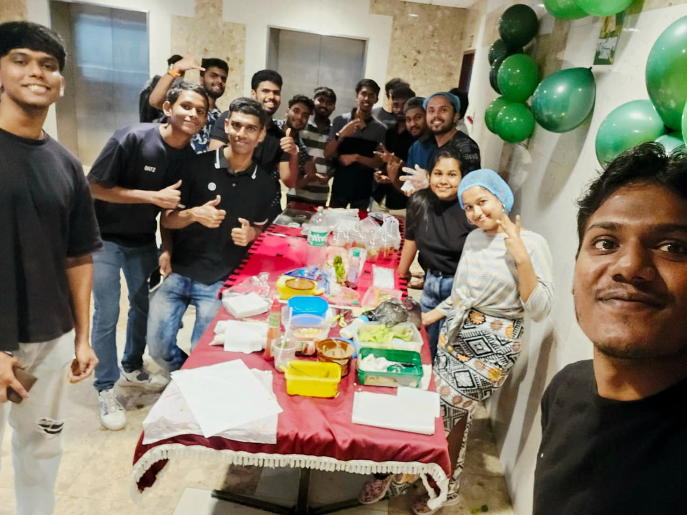
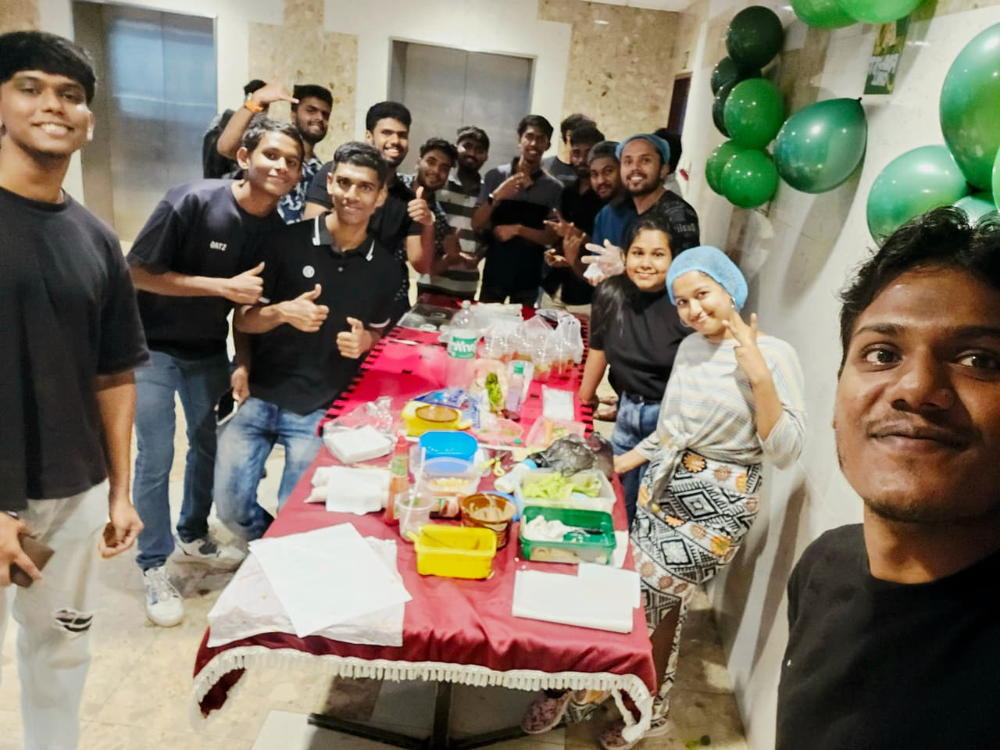

Portfolio Management Mastery

1. What is a Portfolio?
A portfolio is a collection of your work, achievements, skills, and documents used to show your abilities to others.
2. Uses of a Portfolio
- Job applications – to show skills and past work
- Career promotions – to prove achievements
- Creative fields – design, writing, photography
- Education – show learning progress
- University admissions – show talents and activities
- Teaching – collect lesson plans, student work
- Freelancing & consulting – show past projects
- Business & entrepreneurship – show plans and products
- Networking & personal branding
- Career change – show transferable skills
3. Types of Portfolios
- Personal Portfolio
Shows your creative work (art, design, writing, photography). - Career / Dossier Portfolio
Includes resume, cover letter, work documents. - Employment Portfolio
Shows your workplace achievements, certificates, performance. - Assessment Portfolio
Shows your learning progress, assignments, projects (used in schools/universities).
4. How to Create an Assessment Portfolio (17 Steps)
- Know your purpose
- Know your audience
- Choose format – physical or digital
- Collect materials – certificates, work, projects
- Organize sections – intro, CV, education, work, skills
- Give context – explain each item
- Highlight achievements
- Keep it professional and neat
- Add reflections – strengths, weaknesses
- Update regularly
- Ask for feedback
- Customize for each purpose
- Practice presenting
- Keep backups
- Protect privacy
- Use digital tools smartly
- Keep improving
5. Best Online Tools to Create Portfolios
- Behance (creative)
- Google Sites
- WordPress
- Wix
- Weebly
- Squarespace
- Adobe Portfolio
- GitHub Pages (for programmers)
- Cargo
- Portfoliobox
- Journo Portfolio (writers)
- Pathbrite (students)
Your Portfolio = Your Professional Story


 
